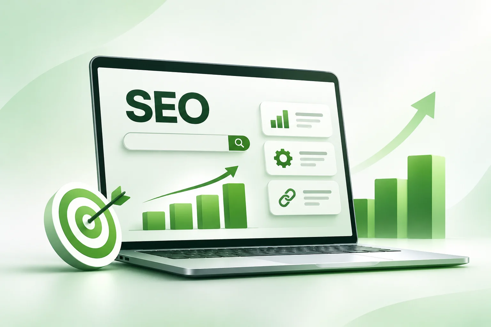

There is no single SEO cost in India. What you pay depends on five things: how hard your competition is, how many locations you target, the state of your website, how much content and link building you need, and who does the work. That's why SEO charges in India can look wildly different for two businesses on the same street.
Most Indian businesses pay a monthly retainer. Rates here are also much lower than in the US or UK, so a foreign "average price" article won't tell you much. This guide skips the rate cards. Instead, it shows you what drives the number, what each budget level should buy, and how to tell whether the quote on your desk is fair.
Local businesses targeting one town sit at the lower end. Kerala-wide or national campaigns fall in the middle. Large ecommerce stores and national brands sit at the top. The only fair way to know your own cost is a written quote that follows an audit of your website and competitors.
If you'd rather skip the reading and get a number for your own site, our team at Bamboost, an SEO company in Kozhikode, does exactly that after a free audit.
Why SEO Charges in India Vary So Much
SEO charges in India vary because SEO is a set of tasks, not a product with a fixed price. One business needs a few page fixes; another needs hundreds of pages rewritten, a site rebuilt and months of outreach.
Think of it like a builder's quote. Nobody can price "a house" until they know the plot, the size and the finish you want. SEO is the same. Two agencies can both say "SEO" on the invoice and mean completely different amounts of work.
Location matters too. An Ahrefs survey of 439 SEO providers found that India-based providers charge far less than providers in the US and Canada, whether they bill monthly, hourly or per project. That gap comes from salaries and running costs, not from a gap in skill. So when a US article quotes a monthly figure, it tells you very little about the SEO cost in India.
The useful question isn't "what's the going rate?" It's "what work does my business need, and what should that work cost?"
SEO Cost in India by Business Type
The smaller your market and the fewer your rivals, the lower your SEO cost. A shop competing in one town needs far less work than a store selling across India.
The table below ranks typical business types from the lowest to the highest relative cost. It describes the work, because the work is what you're paying for.
| Business type | Relative cost | What the work usually includes |
|---|---|---|
| Very small local business (single service, one town) | Lowest | Google Business Profile setup, a handful of pages, basic on-page fixes, review requests |
| Local business (clinic, restaurant, institute, shop) | Low | Local SEO and Maps, service pages, technical fixes, steady reviews, local citations. This is where most local SEO price in India questions land. |
| Growing SME (several services or nearby towns) | Medium | Location and service pages, regular content, link building, monthly reporting |
| Kerala-wide or national service business | Medium to high | Keyword strategy across regions, larger content plan, digital PR and backlinks, technical SEO at scale |
| Ecommerce store | High | Category and product page optimisation, crawl and index control, schema, faceted navigation fixes, content |
| Enterprise or national brand | Highest | A dedicated team, thousands of pages, international or multi-language SEO, close work with developers |
How Much Does SEO Cost per Month in India?
SEO cost per month in India follows the scope of work, not the agency's name. Most providers bill a fixed monthly retainer because SEO is ongoing: rankings move, competitors publish, and Google updates its systems.
The Ahrefs survey found the monthly retainer was the most common way SEO providers charge. In India, that's even more true for small and medium businesses.
Here's how scope changes your SEO charges in India per month. A dental clinic in Kozhikode competes with perhaps a dozen nearby clinics for searches like "dentist near me". The work is local, focused and fairly small. A national online store competes with marketplaces and big brands for thousands of product searches. Its retainer has to pay for far more people and hours.
Same service name, very different bill. That's normal. Whether you search for the Google SEO price in India or ask an agency for its monthly fee, a quote without an audit behind it is only a guess.
What Decides Your SEO Cost: The 5 Main Factors
Five factors set almost every SEO quote in India: competition, locations, website condition, content and link needs, and who does the work. If you understand these, you can read any quote with confidence.
- Competition. If the businesses ranking above you have strong websites and years of links, you need more work to pass them. "Lawyer in Kochi" is a harder fight than "tile shop in Vadakara".
- Number of locations. Each town or city you target needs its own page, its own local signals and sometimes its own Google Business Profile. Five branches cost more to cover than one.
- Website condition. A slow site, broken pages or a messy structure must be fixed before anything else works. A technical SEO audit shows how much repair work comes first.
- Content and links. Writing useful pages takes time, and earning genuine backlinks from trusted sites takes even more. The more of both you need, the higher the cost.
- Who does the work. A freelancer, a small agency and a large firm price differently. Experience matters as well: Ahrefs found that providers with 5–10 years in business charge more than double the monthly retainer of those with two years or less.
Freelancer vs agency isn't about good vs bad. A skilled freelancer can suit a single clinic well. A business that needs writers, developers and outreach at the same time usually needs a team.
SEO Pricing Models in India
SEO pricing in India follows three main models: a monthly retainer, a one-time project, or hourly consulting. The right one depends on whether you need ongoing growth, a fixed job done, or expert advice for your own team.
| Model | How it works | Who it suits |
|---|---|---|
| Monthly retainer | A fixed fee each month for an agreed list of ongoing work and a monthly report | Most businesses that want rankings and enquiries to grow over time |
| One-time project | A set fee for a defined job, such as an SEO audit, a site migration or a technical clean-up | Businesses with a specific problem, or those preparing to start ongoing SEO |
| Hourly consulting | You pay for an expert's time to advise, train or review | Companies with an in-house marketer who needs guidance, not hands-on work |
Is SEO a One-Time Cost?
No. A one-time project can fix what's broken today, but it can't keep you ahead tomorrow. Competitors keep improving, and your own site keeps changing. That's why most businesses pair a one-time setup with a monthly retainer.
What About Performance-Based SEO Pricing?
Some agencies offer to charge only when you rank. Of all the SEO pricing models in India, this one needs the most care. It sounds safe, but rankings alone can be gamed with keywords nobody searches for. If you choose this model, tie payment to results you can verify yourself, such as enquiries tracked in your own Google Analytics or calls from your Google Business Profile, not ranking screenshots.
What Each Level of SEO Budget Should Buy
Every SEO budget, small or large, should buy clearly listed work you can check each month. Here's what to expect at three broad levels of SEO cost in India. Use it to test whether a quote matches its promises.
Entry Level
Fit for a single-location business with a few rivals. Expect a full Google Business Profile, fixes to your key pages (titles, headings, speed, mobile), a few new service or location pages, help collecting reviews, local listings with consistent details, and a short monthly report from Google Search Console.
Mid Level
Fit for growing SMEs or businesses targeting several towns. On top of the entry work, expect a keyword plan, regular new content, steady link building from relevant sites, conversion tracking, and a monthly call to review results and agree next steps.
Full Programme
Fit for Kerala-wide, national or ecommerce businesses. Expect a dedicated team, technical SEO at scale, a content calendar, digital PR, schema, close work with your developers, and reporting tied to revenue, not just traffic.
How to Set a Sensible SEO Budget for Your Business
Set your SEO budget from what a new customer is worth to you, not from what an agency advertises. Four steps will turn the general question of SEO cost in India into a figure that makes sense for you.
- Work out what one customer is worth over a year. Include repeat visits, not just the first sale.
- Count how many extra customers would make SEO worth it. If two new patients a month cover the cost, the bar is low. If you need fifty, think again.
- Commit for at least six months. SEO builds slowly, and judging it after eight weeks wastes what you've already spent.
- Fund the basics first. A working website, a complete Google Business Profile and clear service pages come before blogs or link campaigns.
What a Monthly SEO Retainer Should Include
A fair monthly SEO retainer lists the work, names who does it and reports results from your own data. Check your quote against this list:
- A written scope of tasks for each month
- A named person you can contact
- Full access to your own Google Search Console and Google Analytics
- Technical checks and fixes, not just "monitoring"
- New or improved pages each month
- Link building that follows Google's spam policies
- A monthly report showing rankings, traffic and enquiries, with what's planned next
Does AI Search (GEO) Cost Extra?
For most local businesses, no. Google says its AI Overviews draw on the same Search index as normal results, so solid SEO already covers most of what AI search needs.
Generative engine optimisation (GEO) mostly means doing good SEO well: clear answers, consistent business details, and mentions on trusted sites. Larger brands may pay for extra work, such as tracking how ChatGPT or AI Overviews describe them.
Be wary of a "GEO package" that only adds an llms.txt file. Google's AI optimization guide says Google Search doesn't use such files at all. If AI visibility matters to you, our guide to showing up in ChatGPT explains what actually helps.
Example: SEO for a Local Business in Kerala
Scope, not geography, decides cost, even inside one state. These two businesses are illustrative examples, not Bamboost clients.
A dental clinic in Kozhikode. It serves people within a few kilometres and competes with a handful of clinics. Its SEO focuses on Google Maps, a few treatment pages, reviews and a fast mobile site. This is the work our local SEO services cover, and it sits at the lower end of SEO cost in Kerala.
A builder selling flats in Kochi. It competes with large developers and property portals for high-value searches across Kerala and the Gulf. It needs project pages, location content, steady link building and lead tracking. That's a mid-to-high scope.
An online store selling Kerala spices across India would go further still. Our ecommerce SEO services page shows what that work involves.
Red Flags in a Cheap SEO Quote
A cheap SEO price in India becomes expensive if it gets your site penalised or leaves you with nothing to show. Walk away if you see any of these:
- Guaranteed #1 rankings. Google itself says no one can guarantee a #1 ranking.
- Hundreds of backlinks for a small fee. Bulk or bought links break Google's spam policies.
- No access to your own data. Your Search Console, Analytics and Business Profile should belong to you.
- Long lock-in contracts with no exit clause if work isn't delivered.
- No named person responsible for your account.
- Activity-only reports that list tasks but never show traffic or enquiries.
How to Check If an SEO Quote Is Fair
A fair SEO quote is specific, based on your own site, and measured with data you can see. Five checks will tell you:
- Was it written after someone audited your website and competitors?
- Does it list monthly tasks, not just "SEO services"?
- Does it state the full monthly fee, with nothing left as an extra?
- Will you keep ownership of your accounts, content and data?
- Does it say how results will be measured and reported each month?
Get two or three quotes and compare the work, not just the totals. SEO pricing in India differs so much between providers that the scope is the only fair way to compare. The lowest number with the vaguest scope is rarely the best deal.
Want to Know What SEO Would Cost for Your Business?
Get a free SEO audit and a written quote based on your own website and competitors.
How Long Before SEO Pays Off?
Most businesses see clear results from SEO in 3 to 6 months. Google usually takes 4 to 8 weeks to reflect page changes, and competitive keywords can take 6 to 12 months.
Local searches in towns like Kozhikode often move faster than Kerala-wide terms. If you need leads this week, paid ads fill the gap while SEO builds. Our comparison of SEO and Google Ads explains when each makes sense.